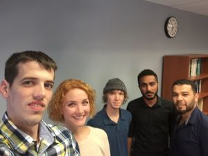
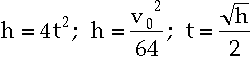

Dancing knees
Abstract
3D printing customizable knee braces for dancers with hyperlaxity/hypermobility of the knee.
Team members
- 
- Mark Terry
- Lindsey Grissom
- Mohamed Alkrabi
- Travis Zierold
- Fadel Almashame
- assistance of Dr. Anna Foust, Sean Harvey, Chas Davies, Trey Rogers
Problem Statement/overview of the need
Dancers with lateral and medial knee dislocations need a knee brace that works for the sport without causing problems
Design Specifications
1. Flexible to accomodate full range of motion
2. Will not come loose during dance
3. Any clasps must be able to be repeatable (nothing that is tightened to a non-specific point)
4. J-Brace against the outside of the knee to keep the knee cap in place
5. Material must not shatter on impact or be too stiff when knee drops (particular dance move) are executed by the dancer
== Problems with standard knee braces ==
Medical joint stiffness caused in younger people.
Limited Mobility.
Limits rotational motion of knee.
General Bulkiness
Too much/little support
Not enough/Not the right kind of support for dancing
Too much support kills mobility and slows down the dancer
Forces on the Knee from dancing
- Drop forces
- Rotational Forces
Conceptual Design
Summarize your conceptual design process. Develop at least three concepts.
Design Concept 1
- *Claw system with gear mechanism
- - Small ratio for fine adjustment
- *Side adjustment for tightness on leg
- *Mechanism inside 3d printed plastics
Design Concept 2
- * Cable system
- * Cable mounted inside printed material
- * sliding joints for tightness adjustment
Design Concept 3
- * Clamshell with Teeth Design
- * Multiple side adjustments
- * Flexible material to allow rotation
Evaluate concepts/select candidate
The Cable System was the winning candidate.
Detailed Design
Although the Cable System was the winning candidate, as we learned more about the capabilities of Ninjaflex, we decided to first see if we could print with tight enough specifications that we would not need any tightening system. If we did end up need a cable system, we could later attach it to the outside of the brace. We further simplified our design, after consulting with Sean Harvey. We began printing test pieces, experimenting with different settings on the printers. There are some settings that cannot be changed, but the infill and the way we printed (flat or round pieces) could drastically change the elasticity of the printed piece.
In the end, our design was changed from the Cable System design to two flat printed pieces with diamonds cut out (this increases the elasticity, so that the brace is easier to put on and off and is more comfortable to wear when the quadricep is flexing) glued together into a circle to form the top band. This is then glued to the middle pieces (the J-brace, glued to the larger middle piece that covers it and attaches to both the top and bottom bands). The bottom band is printed in the round, so it is less elastic, as the calf muscle does not flex as much as the quadricep does. This prevents the brace from slipping off during movement, like a traditional brace might.
Description of selected design
The selected design consists of 5 parts. All pieces will be 1/16" in thickness unless otherwise specified.
The top band will encircle the thigh just above the knee. The circumference for this piece will be taken using a scanner. The bottom band will sit just below the knee and the circumference will also be taken using a scanner. The top band will 2" tall, as it will carry most of the weight of the brace. The bottom band will be 1.5" tall.
The middle section of the brace consists of 3 pieces. The J-brace will be printed in ninjaflex at a higher temperature and a higher infill so that the material is stiffer, but still retains some flexibility. This should allow for comfort and ease of movement for the dancer. The J-brace will be sandwiched between two layers, one on top and one on bottom, that are identical. These layers will have a semi-circle cut out to accommodate the knee cap and a gentle arc on the outside of the knee to allow for ease of movement and to prevent excess material bunching when the knee is bent. These layers will attach at top and bottom to the top and bottom bands.
All connections will be made with Gorilla Glue brand Super Glue Gel. If this attachment process is not ideal, hot knife welding will be employed.
Detailed description of selected design
Analysis
Force Analysis
The J-brace should be able to withstand the force of the knee-drop (see calculations).

• t is duration of jump (in seconds)
• V is initial vertical velocity
• h is height, measured in feet.
Time in the air depends only on the vertical component of velocity, not on the dancer's mass or horizontal speed. So Net effect of force on Knee is only Potential energy stored during the jump up That is equal to mgh Let height = 0.5m Then Net effect of force = 56.69 * 9.8 * 0.5 = 277.78 N
== Knee Drop Force ==
- With weight of 125 lbs
F= 125x/(19+x)
| X (in) | F (lbF) |
|---|---|
| 6 | 30 |
| 7 | 33.654 |
| 8 | 37.037 |
| 9 | 40.179 |
| 10 | 43.105 |
| 11 | 45.833 |
| 12 | 48.387 |
Elasticity Analysis
One of the chief complaints of the dancers was that fabric braces tend to lose elasticity over time. We would like to test our material and make sure that Ninjaflex does not lose elasticity.
- For the Elasticity Test we took one of our main ninjaflex pieces at 70% hexagonal infill, and stretched it 2 centimeters for over 12 hours. We found that our NinjaFlex piece would always return to the designated 14.5 cm, from the 14.7 cm stretched length
Glue Analysis
- We included a glue analysis when testing the max strength of our NinjaFlex pieces. We hung a Ninjaflex piece using our guerilla glue brand gel and added increasing weight to see which would fail first. The results we received were astounding.
- The glue ended up being stronger than the NinjaFlex material itself.
- In total we were able to stretch the NinjaFlex piece 2 inches with a force of 52.8 lbs before failure
CAD Drawings
Bill of Materials
- Weight Per piece
- Ninjaflex/Semiflex: $100/kg
- Glue: $12.99/15g
- Athletic fabric: $5/yd
Assembly Instructions
Fabrication Process
The entire brace was printed on various printers in the MakerSpace at Tennessee Tech. Print times varied for each piece, but the approximate total print time was 20 hours, not counting pieces that were not used in the final brace.
Testing and implementation
The final brace was assembled and sized for the dancer. The middle section had already been tested to fit the knee, so only the top and bottom band remained to be sized. Although the original sizing was too large (we had planned to use two large flat pieces for the top band; instead, one large and one small flat piece ended up fitting perfectly), we had enough pieces on hand to be able to size the brace correctly. The brace was assembled and tested, and the dancer was able to complete several leaps in the brace.
The dancer reported that the brace was very comfortable and she thought that it would be effective at preventing dislocations. Although our original plan had been to back the brace in athletic fabric to absorb sweat, the dancer preferred the rubber against her skin, saying that the "grippy" feeling felt more secure than any other brace she had ever worn.
Photos of Completed design

Instructions for safe use
This brace should only be worn by the dancer for whom it has been correctly sized. It is not intended to replace a doctor's medical advice or prescribed medical devices.
Project Summary, Reflection
The brace could probably use additional printed pieces to keep the j-brace pulled taut against the knee at all times, but for the time we had and the lack of access to printers, the amount of experimentation we were able to do with ninjaflex is significant.
The project was submitted to the ASME I Am 3D competition. The submission process was not easy; although the competition required a 3 page paper, there was no place on the submission page for the video to be uploaded or linked to. Attempts to contact ASME have not been answered.
Our 3 minute video can be viewed here
Our business case can be read here